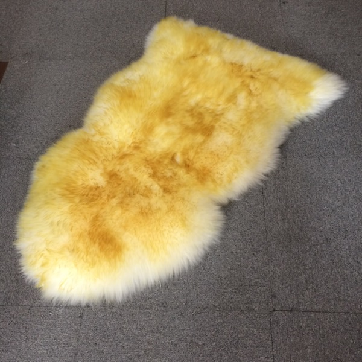

Organic Baby Sheepskin Mat | Chemical-Free Natural Merino Wool
$89.99
Premium Organic Sheepskin for Babies
Keep your little one safe with our certified organic baby sheepskin mat. Free from chemicals, dyes, and synthetic treatments. Australian merino wool naturally regulates temperature, keeping babies warm in winter and cool in summer.
Specifications
- Material: 100% Organic Australian Merino Wool
- Certification: OEKO-TEX Standard 100
- Wool Length: Medium Wool (30-40mm)
- Size: 80cm x 60cm
- Origin: Australian Made
- Features: Chemical-free, Natural temperature regulation, Hypoallergenic
Keywords
organic baby sheepskin, chemical-free sheepskin mat, natural baby mattress, merino infant mat, safe baby sheepskin, newborn sheepskin play mat